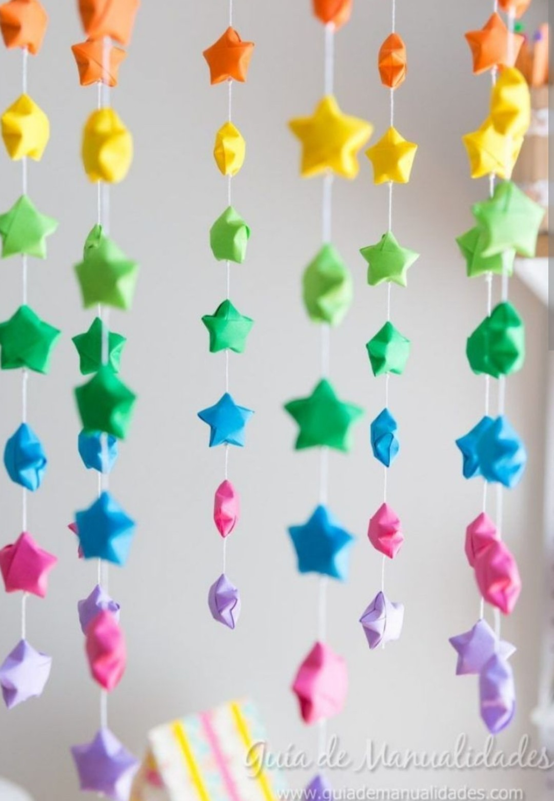

Bienvenidos al Mundo de las Manualidades

Descubre el maravilloso universo de la creatividad. Las manualidades nos permiten expresar sentimientos, desarrollar habilidades y crear objetos únicos con nuestras propias manos. En esta página exploraremos qué son, sus características y mucho más.